Artist Profile · b.1984, Nagano
津田翔一
TSUDA Shoichi
1984年、長野県長野市生まれ。2013年、東京藝術大学美術学部絵画科油画専攻卒業。事物の存在に纏わるあらゆる傾向を、世界を構成する最小の要素〈いと〉と捉え制作を行う。自身の生まれ育った「左美都（長野県長野市信更町三水）」の地質や深く根ざした記憶と向き合い、油彩による描画を起点としながら、映像・立体・インスタレーションへと展開し、多層的な「洞窟」の根源を探求している。
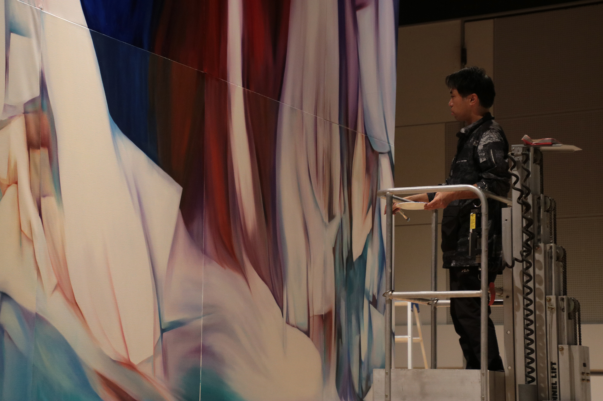
津田 翔一
TSUDA Shoichi
| Born | 1984年 長野県長野市生まれ |
|---|---|
| Education | 2013年 東京藝術大学美術学部絵画科油画専攻卒業 |
| Base | 長野県長野市信更町三水（左美都） |
| Practice | 油彩絵画を起点に、映像・立体・インスタレーションへと展開する多層的な制作活動を行う。 |
| Theme | 〈いと〉と〈洞窟（単位世界）〉。土地の記憶・地質・神話・伝承を通じた存在の根源の探求。 |
| Contact | sh012da@gmail.com |
Studio & Performance
制作の軌跡
Traces of Making
左美都の土地の記憶が、ひとつの筆触から始まる。孤独な制作の洞窟から舞台へ、そして観客との対話へ。三つの「場」を通じて浮かび上がる、津田翔一の制作の全体像。
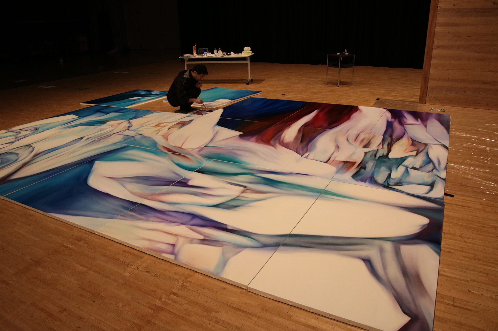
キャンバスに向き合うとき、
そこはすでに別の宇宙だ。
左美都の地層が手を動かす。
ひとつの大作は、時として床いっぱいに広がるキャンバスから始まる。縦横数メートルに及ぶ画面の前に蹲り、全身で絵具を重ねていく。思考と身体が同期する瞬間——それが津田翔一の言う〈洞窟〉だ。外部から切り離された静寂の中で、左美都の地質と記憶が絵の深層に堆積してゆく。
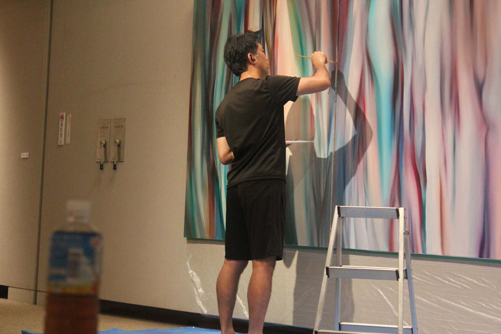
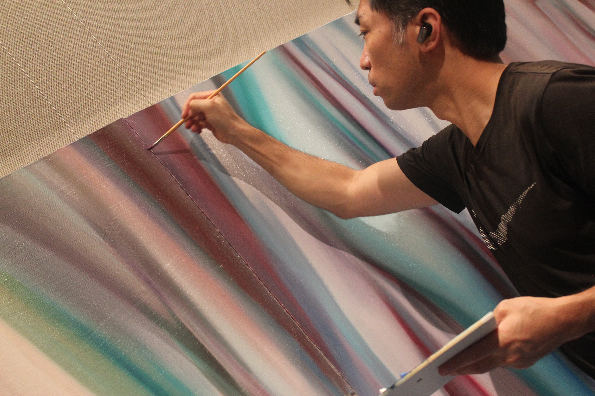
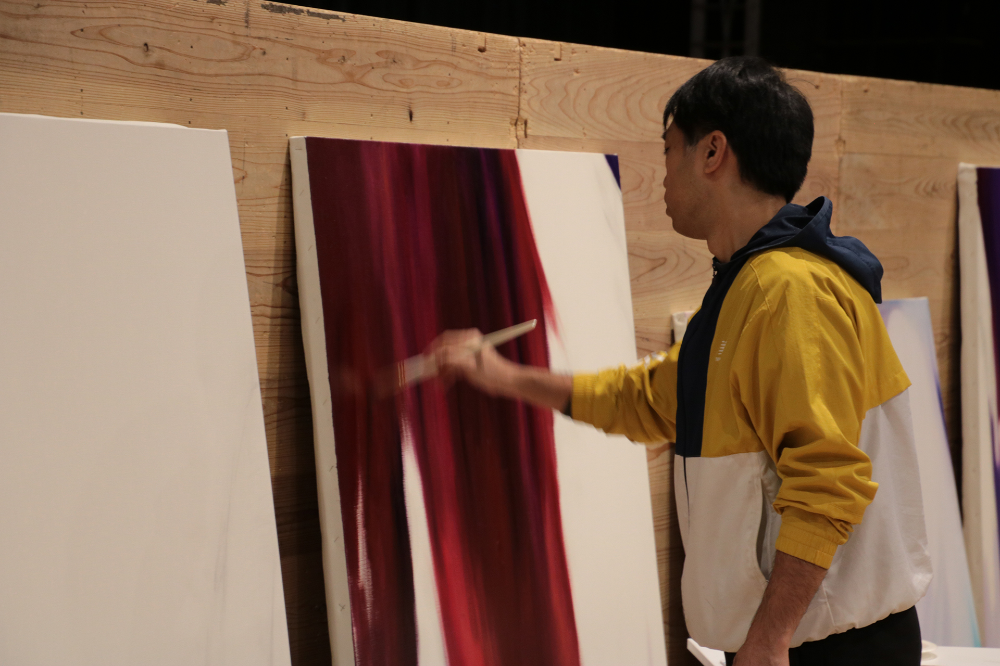
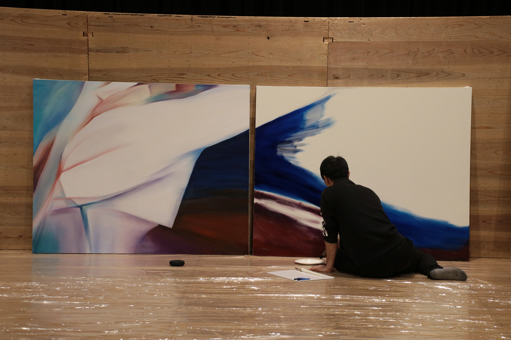
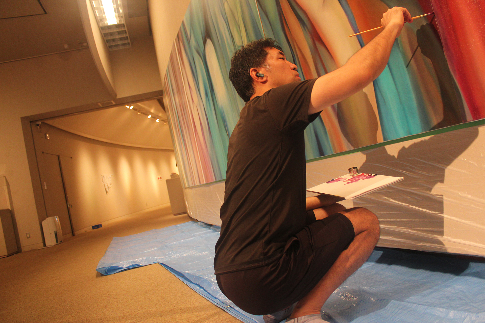
「絵を描くことは、土地の記憶を身体で翻訳する行為だ。
筆が動くたびに、左美都の地層が一枚ずつ剥がれてくる」
— Tsuda Shoichi, artist statement
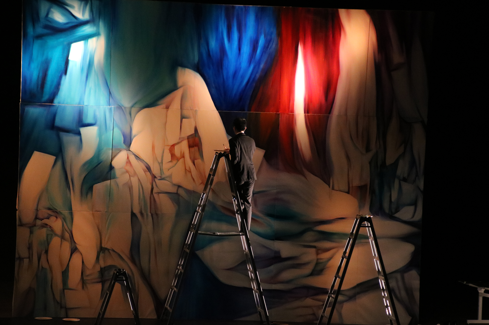
音楽が鳴り、照明が変わる。
筆は観客の呼吸と
同期しはじめる。
孤独な制作の場から飛び出し、津田翔一はステージ上でもキャンバスに向かう。音楽家とともに舞台に立ち、観客の目の前でリアルタイムに絵を完成させるライブペインティング。はしごを上り下りしながら、数メートルの大画面に筆を走らせるその姿は、絵画というものが「完成品の展示」だけでないことを示す。時間と身体が刻まれる、もうひとつの作品だ。
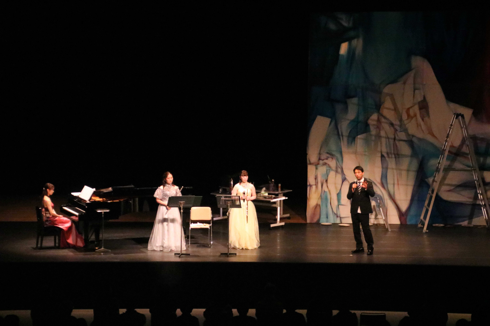
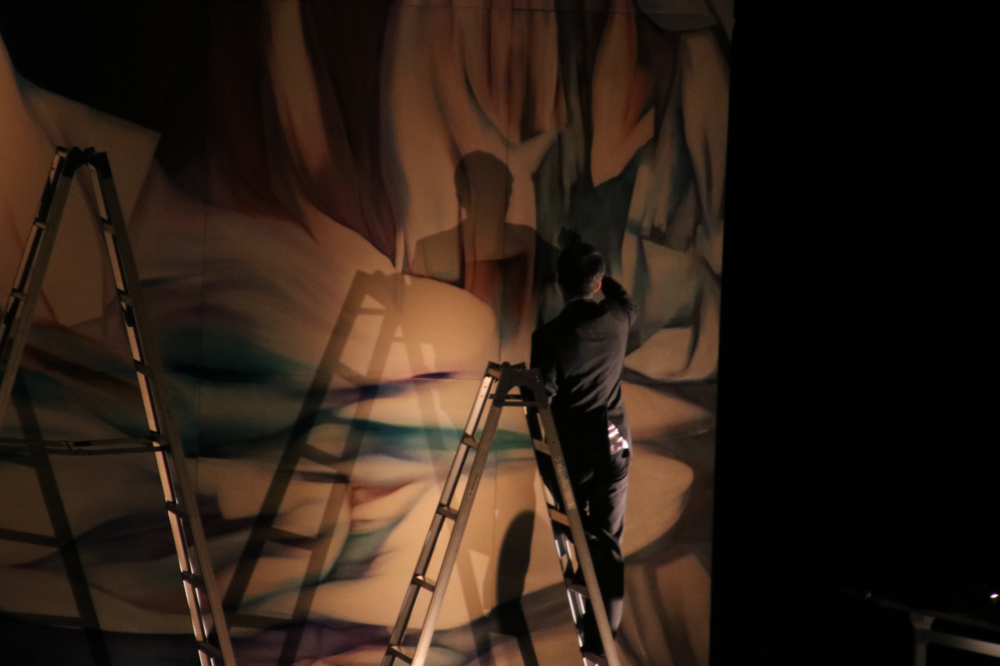
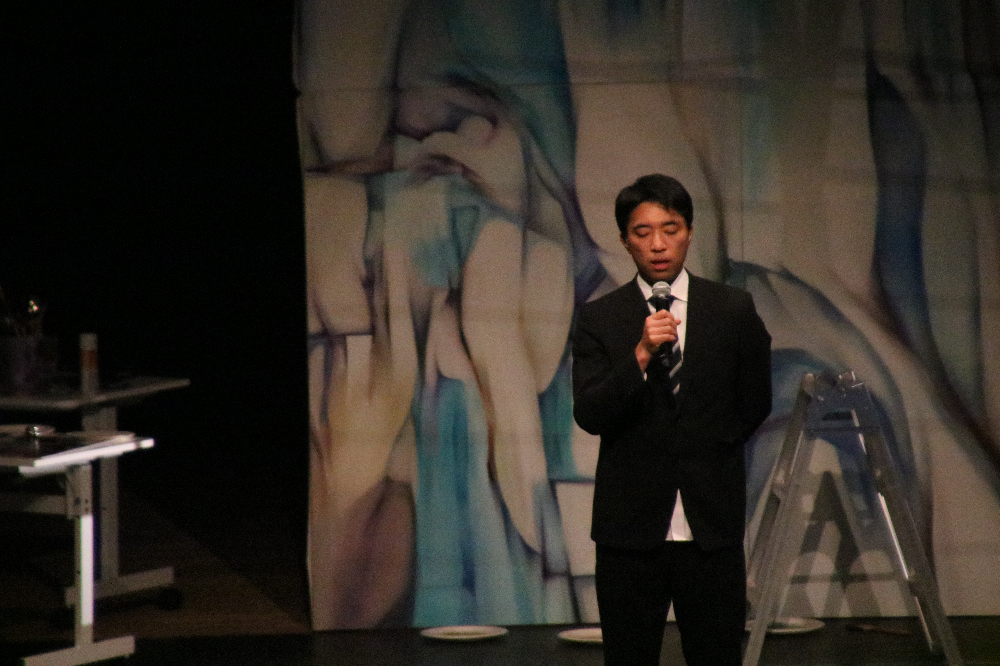
制作とは〈単独者の行為〉から始まり、
いつか〈場との共鳴〉へと開かれていく。
— 枠組みを越え、空間と共鳴する
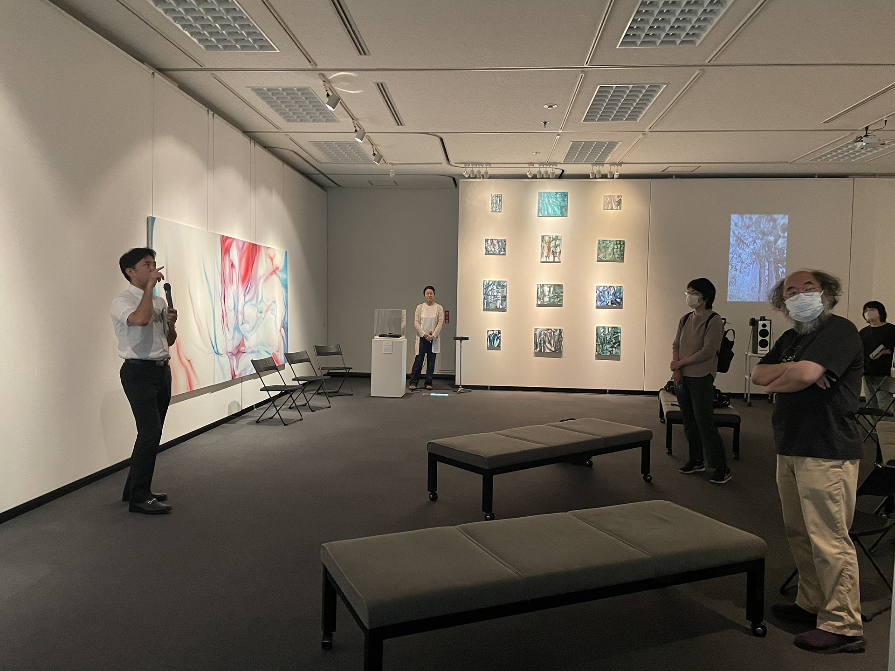
作品は展示されたとき、
はじめて「他者の目」を
手に入れる。
ギャラリーでのトーク、パネルディスカッション、そして観客との笑顔の交流。津田翔一の制作は、内なる洞窟から外の世界へと絶えず往来する。作品について語る言葉も、制作の一部だ。他者と対話することで、左美都の記憶はより普遍的な問いへと変容してゆく。
.JPG)